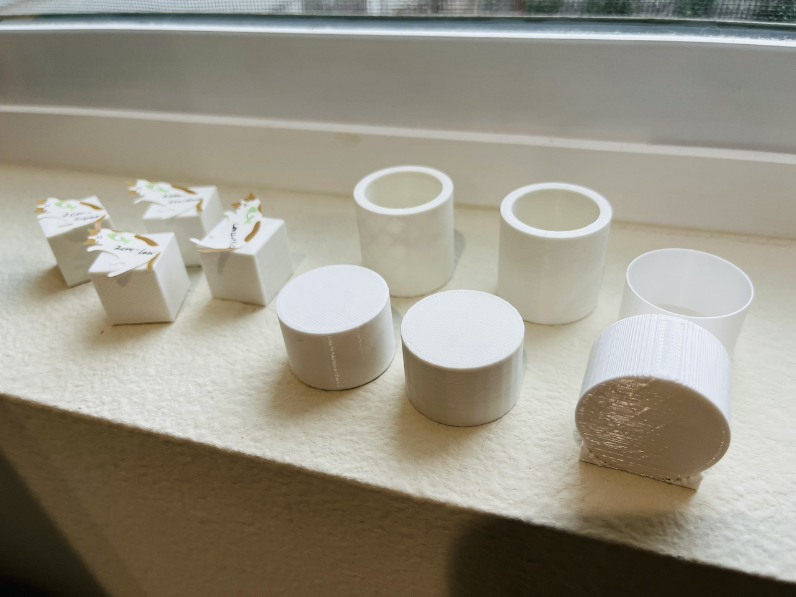
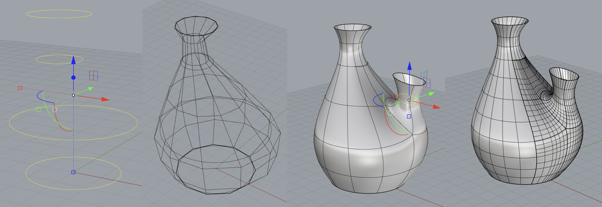
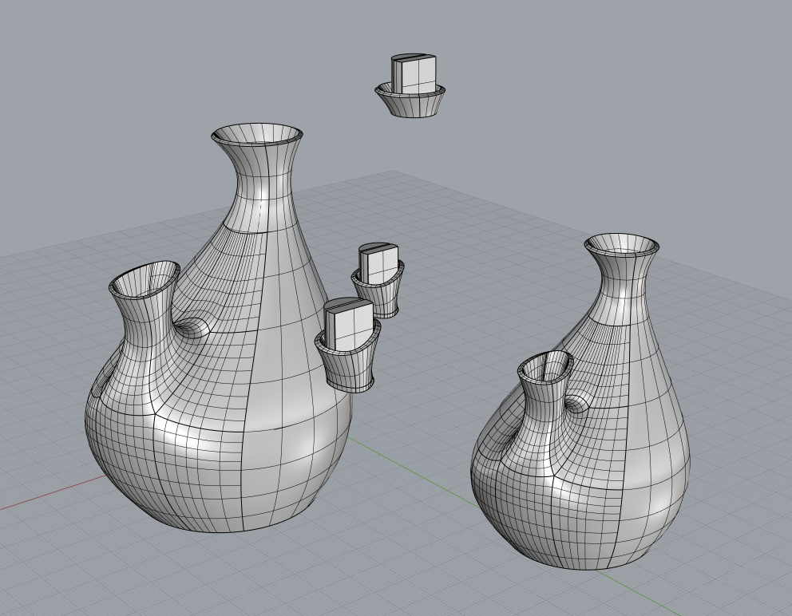
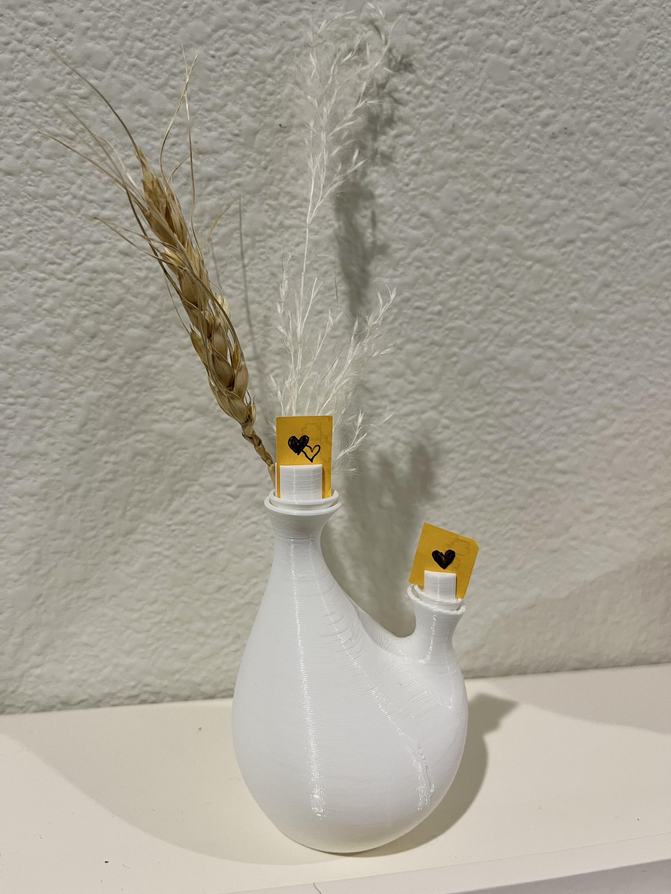
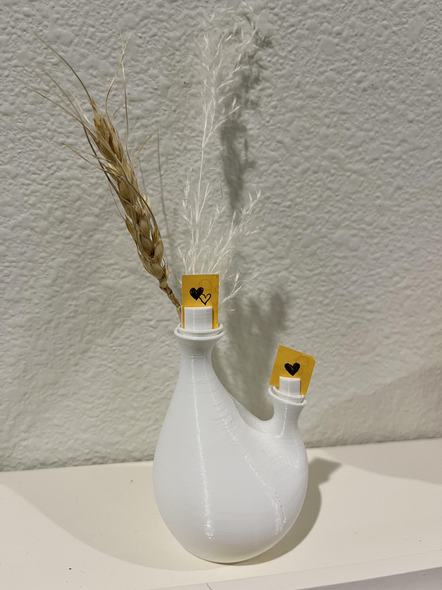

A4: Subtractive Manufacturing!
3D printing a box

After finishing the assembly, I started to level the bed. The aim of bed leveling is to ensure
the nozzle is very close to the bed at all four points. To adjust this, I first chose “auto home” from the dial to move
the nozzle to [x=0, y=0, z=0] and disabled the steppers to be able to adjust the position of the nozzle by myself manually.
Then, I put a piece of letter paper under the nozzle. By tuning the four-wheel screws under the bed, I made sure it could
barely move between the nozzle and the bed when moving the nozzle.

Nested object!
What I wanted to design is a vase with two holes that have optional addons to hold photos and
flowers. I used SubD Tools in Rhino to build the vase and addons. I tried twice to print it out. For the first time, I printed
the vase by setting it with the special mode "spiralize outer contour." The thickness is not enough to stick to each line together,
so it was loose in the middle of the vase. Then I added the thickness by using the command offsetsrf to increase the thickness to 1.5mm
and scale it to 0.9 to get a quicker result. The total print time is 1h19mins. This time it worked out! I'm pretty happy with this result.



 

Acknowledgement:
Junchao TA helps a lot with how to add thickness to the vase.
Return to home